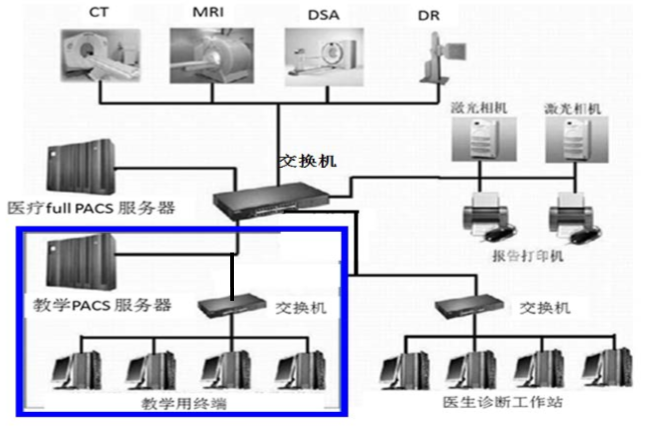

<div id="sub-page">
  <ul class="sub-wrap">
    <li>
      <div class="title">
        <strong>技术架构:</strong>
      </div>
      <div class="img">
        
      </div>
      <div class="detail">
        <p>1)	基础：本虚拟实验教学项目以附属医院先进的影像设备和医疗PACS为依托，
          利用丰富的病例资源和丰富的诊断经验为基础。</p>
        <p>2)	平台：建立教学PACS虚拟临床工作模式，与传统实验教学相结合。</p>
        <p>3)	按照实验教学大纲要求，建立实验模块，完成虚拟网络实验教</p>
        <p>开发技术：HTML5，其他C#</p>
        <p>开发工具：Visual Studio</p>
        <p>运行环境：</p>
        <p>服务器：CPU双核、内存32GBGB、磁盘1000GB、显存1GB、GPU型号双</p>
        <p>操作系统：   Windows 10</p>
        <p>数据库：   SQL Server</p>
        <p>备注说明：项目品质（如：单场景模型总面数、贴图分辨率、每帧渲染次数、动作反馈时间、显示刷新率、分辨率等）：贴图分辨率：512*512，显示刷新率：60 分辨率1280*768
        </p>
      </div>
    </li>
  </ul>
</div>
